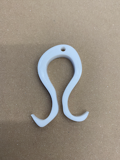
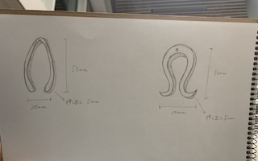
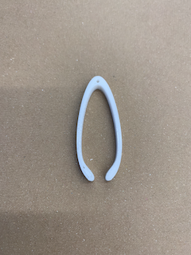

◯多幸な最後のピンセット

◯スケッチ

◯設計ファイル
pinset1.stlファイル
◯作品の説明
Ω（オメガ、オーム）の形、タコの形をしたピンセット。
大きさは、縦50mm✖︎横30mm✖︎高さ5mm
◯なぜこの作品を作ろうと思ったのか
進化したピンセットと聞いた時、最後のピンセット、８本の足でものを器用に扱うタコのようなピンセット、この２つが思いついた。
まず最後と想像してΩの字を思い出した。Ωは「物事の最後」という意味を持つ。また、タコには、タコにちなんだたくさんの良い意味がある。
例えば、”多き幸せ（多幸）”として新年におせち料理に入れられたり、最近では、「置くとパス（合格）」の意で、受験の際の縁起物としても扱われている。
そんな素敵な意味をピンセットに込めようと考えた。
◯練習作品

これは作品を作る前にどんな感じになるのかを試しに作ってみたものである。
・設計ファイル
pinset2.stlファイル